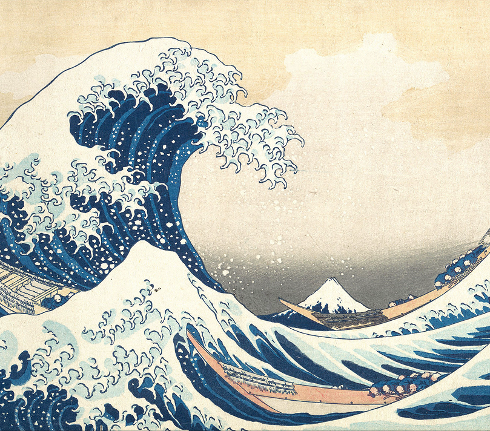

The Great Wave off Kanagawa
Hokusai
The Great Wave off Kanagawa
Hokusai
1831
The Great Wave off Kanagawa (Japanese: 神奈川沖浪裏, Hepburn: Kanagawa-oki Nami Ura, lit. "Under the Wave off Kanagawa"), also known as The Great Wave or simply The Wave, is a woodblock print by the Japanese ukiyo-e artist Hokusai. It was published sometime between 1829 and 1833 in the late Edo period as the first print in Hokusai's series Thirty-six Views of Mount Fuji. The image depicts an enormous wave threatening three boats off the coast in the Sagami Bay (Kanagawa Prefecture) while Mount Fuji rises in the background.
GO TO SOURCE